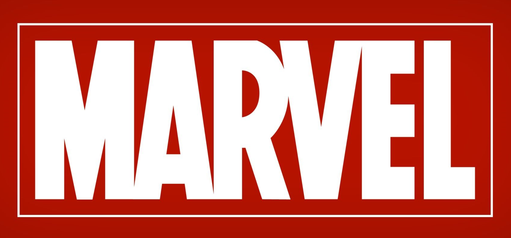

Discussing Marvel and difference between animated and live action films
Top 5 Marvel Movies to Watch
Here are my top 5 Marvel movies and the reasons why you should watch them. Starting in fifth place is The Avengers movie from 2012. That movie is a great introduction to the Marvel Cinematic Universe. You don’t miss anything if you have not seen the previous movies. The next movie coming in fourth place is Thor Ragnarök. This movie was able to take a new look at the character of Thor. In the past, this character was very serious, and the movies were mediocre. This movie was able to revive the character and make him more interesting and was able to provide a movie that was funny and still had character development. The 3rd movie on my list is Avengers Endgame. This movie was the biggest movie of the year it came out. This movie was impossible not to see as it was a part two to Avengers Infinity War and Avengers Endgame gave a satisfying end to the climactic conclusion of Avengers Infinity War. Second place on my list is Captain America Civil War. This movie was a Captain America centered movie but had a lot of other Marvel characters in the film and still provided a good story while giving some character development for Captain America. Finally in first place is Spider-man: Into the Spider-verse. This movie exceeded all expectations everyone had and provided a new and unique story rather than overplaying an old story that had been told repeatedly. This is a film you can watch many times over and still enjoy it. Hopefully, this list helped distinguish the movies you should try to get to watch in your free time.

Are Animated movies and TV shows better than Live action movies and TV shows?
Do you think animated movies and tv shows are better than live-action movies and tv shows? There are a lot of different factors that go into the success of a show or film. The writing, the imagery, the dialogue and so much more make the film or show great but does having the show or film animated make it better. I won’t tell you exactly what I think is the truth, but I will give you some points that I believe heavily affect shows success. Animated films and shows don’t have as many restrictions as live-action movies and shows do. Even with CGI, live-action movies can only do so much. We can look at the tv show The Flash or the Marvel movies. Their big budgets allow them to show off great scenes and effects and make the movie feel real, but they still have their limits. While in an animated movie or tv show the budget may not be as expensive they can tell more large-scale stories in their movies and shows. Proof of that is in the Marvel What If show. The show can show more big-scale stories that are difficult to show in a live-action setting. Live-action shows and movies allow for more realism in their creation while animated projects aren’t as relatable but still can pull in millions of fans. Live-action doesn’t always mean better either, some animated stories are told better animated than in live-action. Movies and shows like Avatar the last air bender, The Lion King, and Beauty and the beast all did better as animated projects and didn’t work as well as live-action projects. Overall Animation and live-action both have their benefits and shortcomings but either way, you can still get a great project, it also depends on what the consumer prefers.